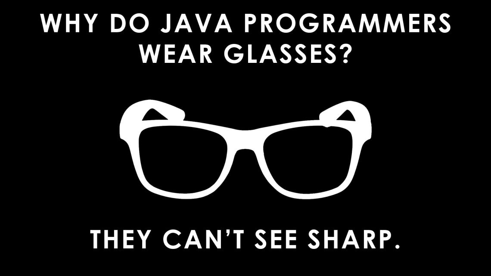

C# is most popular among bigger established businesses,
often for building internal software.
Because it's been around for a long time and has the backing of Microsoft,
it is one of the most in-demand languages in the job market.
C# has also been going through a bit of a rebirth lately,
with Microsoft open sourcing the language and surrounding platform,
porting it to run on Mac and Linux, and incorporating many of the
best features of other languages. If you like the idea of working for a
larger company on business software, C# is a great choice.
Click HERE for more info!
